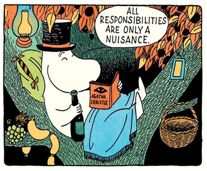
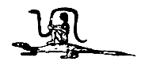

This text was written as the closing words for the Hundred Rabbits North Pacific Crossing Logbook, read it here.
•
I only rarely find myself blogging, but when I do, I collect these entries here. You can find questions & answers in the faqs, and read a more consise and general journal that I update bi-monthly here.
Where is the Life we have lost in living?The Rock by T. S. Eliot in 1934.
Where is the wisdom we have lost in knowledge?
Where is the knowledge we have lost in information?
Notes on focus and purpose.
Years of personal statistics, recorded by way of daily journaling, revealed that my time spent traveling inspired me more than any other of sort of stimuli that was being recorded at the time. From this insight, I have oriented my entire life toward becoming a nomad.
Multi-tasking revealed itself to have a negative impact on my productivity. Working within the confines of a single medium, would convert into long periods of lesser creativity and intermittent productivity. Living at any one place for an extended period showed a decay in inspiration. Leaving school to learn to play music, moving abroad and incessantly meeting new and different people improved personal realization.
Learning to solve problems directly produced more sustained periods of output in comparison to searching for solutions. Investing in building hand-crafted tools is somewhat equivalent to learning general-purpose tools, but with a clear advantage of being able to replicate the tool which is worth its weight in selfstandingness would the tool suddenly become unavailable.
Optimizing toward the need for less revenue has yielded much better results than optimizing toward the generation of more. Remaining immobile in moments of doubts and planning, always converted into better output, than acting impulsively and accidentally taking steps away from one's goals.
Stop buying the unnecessary,
stop doing the non-essential.
Notes on home and travel.
My first encounter with a nomad was during my stay in Prague. Already, Home was becoming an increasingly vague concept at that moment in my life, but meeting someone who's home was everywhere and nowhere had a profound effect on my young self.
The monthly rent of our beach-side appartment in Tokyo was of about 1.75K$, and transitioning from it, to a sailboat, implicated some serious downsizing. The way we looked at it was that, within 3 years, our 20K$ sailboat would be paid at the rate of 600$ per month. Or that by halving the costs of our current living situation, we could become both "homeowners" while keeping our traveling options open.
To think that, at the time, the harder things to let go of were instruments, old consoles, books and some camera equipment. When the truly hard things to let go of would be the habitual bath, tap water and reliable internet connection.
Surely, I would not do all this for the sake of travel alone, I must have had passions, habits and goals before I left everything to live on a sailboat. I appears from that moment that everything that used to define me was beginning to feel increasingly like distractions, simulations to protect me from truly experiencing anything. I had never let myself feel cold, I had never felt hunger.
The wind rocks the ship sideways, keeping me up at night, but all I can feel is that humbling sense of being present and part of that moment. I have long forgotten about tap water, don't mind the warm water from the plastic jugs, I began to wonder why people even feel the need to take showers every day, and time away from social networks really does make me feel better. I traded the things I thought I cared about, for things I didn't know existed.

Eventually, I got back to building things, I learned how to fix sails, repair a toilet, create electronic systems, maintain an engine — Even to live without power.
We have seen every sunset and almost every sunrise, we have sailed with dolphins, we have climbed mountains on deserted islands, and we have met the most amazing people. When it is our time to go, we will have no regrets, for we were fortunate to have seen more than we could ever hope for.
Notes on sociality and distance.
If you asked us why we decided to cross the ocean, I don't think we could give you a straight answer. Even the authors of our sailing manuals, considering the many perils of the sea, cannot explain what might compel anyone to travel by sail when more modern, convenient and safer means exist.
Why would anyone do something with a very real risk of not making it back to shore, and furthermore, for no obvious reward. Perhaps we do these things in the name of freedom, freedom to practice direct experience with all that it entails.
Smart devices to take away the pain of thinking deep thoughts, social things against the solitude, forever removing ourselves, in exchange for protectedness, for a complete thoughtless socialized inexistence.
A creeping numbness might be to blame for our own search of this direct experience, in the form of long distance sailing, to let ourselves feel cold so we could sense the subtler changes in the weather, to go hungry to appreciate simpler foods.
Similarly, one might begin to talk instead of watching talk-shows and to play instead of watching game shows — To value the entire spectrum of sensations as necessary members of the whole that is the deliberate existence, with its potential for failure, awkwardness, loneliness, harm and death included.
Convenient products will protect those living at odds with nature. Novel and fashionable horrors will be popularized to subvert anyone into docility, else new fears will be provided as obedience demands.
In the name of security, a modern citizen will be thoroughly handled. A modern civilisation will deem itself total as it finally does away with all inconveniences, vanquished the totality of the Unknowable, the Indifferent, the Unorganizeable, of Nature, by means of paving over it.
We have seen the non-participation to the throughput mechanisms of society labeled as escapism, but we look at it in reverse where one escapes by being apart from nature. An illusory sense of dominion and domestication of nature might make one think of it as a place where one can escape to, and this is re-enforced when seen through the lense of a synthetic protective layer of proxies and simulations, but the protective layer doesn't curve outward upon nature, but inward upon the individual. And that is absolute escapism.
We believe that one can use nature's indifference as a reminder of the actual fortitude of their being, to learn of one's own true capacity for resilience when communing with nature — Ideas altogether at odds with modern stories, or an invitation to be part of something.
Notes on sustainability and resilience.
In an age of disposable smart devices and unrepairable electronics, there are few topics that occupy my mind as much as planned obsolescence.
Living aboard a sailboat, away from reliable internet connectivity, and outside of delivery networks, forces us to explore ways with which we can strengthen and simplify the toolset onto which we rely to stay afloat.
Casting off, we forlet 3-in-1 packages, bloated always-online services, and establish practices of recyclism, minimum viable products, small-sharp modular utilities. We see smart and robust as opposing attributes to a device, smart is inherently contrary to a single purpose tool, and thus incompatible with dependable solutions.
I periodically find myself thinking about operating systems, or more specifically the interaction design of OSes. In attempting to tackle the difficult UX challenges of that space, unrealizing that my failure to solve these issues might very well come from the simple fact that the purpose of operating systems is to enable multi-tasking, multi-tasking that I try to eradicate from my daily life, making these issues deeply unsolvable and my love for sharp tools and OSes irreconcilable.

Sometimes, I wonder if we shouldn't re-orient our focus onto building things to be run on small low-power open-source single-purpose boards, but I also consider the impact of pushing for the production of more electronics, perhaps creating software targeting old hardware might be what we should be looking into. There must be a reason why everybody favours creating new disposable electronics over supporting pre-existing hardware?
Despite all this, I wonder, Is there a way to create and distribute software and electronics in a way that is environmentally conscious? perhaps not.
Notes on Routine and Habits.
A typical day usually begins at around 6:00am. I rise and work-out with a mix of weights and callisthenics for an hour on an empty stomach. I have breakfast, a protein shake, 5g-10g creatine, and a coffee. I usually ever only drink one cup per day.
I immediately set off to complete the tasks I have waiting in my notes. I have about 3 hours of undisturbed flow before the distraction surrounding lunch-time pulls me away from the work. My goal for each day, is to complete at least a single task that should take about 3 hours to complete — Or between 4 to 5 pomodoros.
After the last pomodoro, I usually cook for a half-hour, and then eat for a half-hour, and then walk for an hour, to fully leave the haze of the flowstate. The afternoon is spent doing maintenance aboard, superficial work and experiments. But mostly, the afternoon is spent reading and learning. The goal is to build a catalog of exciting things to wake up to the next day and to experiment with.
The superficial work that I do involves answering emails, replying to forums, editing wikipedia entries, doing maintenance to various repositories, and so on..
The day ends with journaling for a half-hour at which point I record the tasks done, and the lessons learned. Before sleeping, I usually read for a half-hour, I go to bed with a book, and a highlighter pen. I overline the things I want to keep for a later use, or to revisit.
I have kept journals recording the oscillation of Efficiency and Effectiveness, and used this data to optimize and navigate my own personal tempers. Based on previously recorded patterns, I assign to myself each day a single task to complete. The task is chosen specifically to utilize the optimal amount of available stamina.

When a workday ends before the daily tasks are completed, the day was a planning failure; and the tasks are broken down into smaller tasks, each assigned to one day. When a task is completed too early, the day is also a planning failure.
I try to not go to sleep until I have recorded the events of day in some form, and ideas for the next one. The ideas are selected in the following order: I first address the problems that slow me down, the things I find lacking in my life and the answers to questions that occupies my mind and keep me up at night.
You are what you do. Not what you say, not what you believe, not how you vote, but what you spend your time on.Kevin Kelly
Saturday, February 15, 2025
I've had the immense fortune of living many lives, I spent my twenties playing musician and artist, my thirties, programmer and long-distance sailor. For as far back as I can remember, I've always wanted to be a generalist, and I've never regretted it. Somewhere between natural inclinations, inspiration, influences, and some more direct forces, I've tried to feel at the changes in the wind and find my place in the world accordingly.
My late twenties happened when rent prices were rising at a faster pace than I could keep up with doing what I enjoyed, coinciding with a market saturated with affordable second-hand vessels from the aging boomer generation. So, two vagabonds with relatively few means and a bit of technology, could find a sailboat and travel the world, not long ago this would have been unthinkable without considerable sponsorship. This makes me wonder just for how much longer this door will remain open until distances grow further apart once again.
We read of the golden age of blue water cruising and find their voyages to be as irreproduceable as our own are to others, just nine years ago, mainly due to bureaucracy, depopulation, aging infrastructure and destructive weather events. Countries are growing more insular, the weather more erratic and dangerous, the cost of living siphoning people's capacity to escape its whirlpool.
The meaning of fitness is the capacity of an organism to survive.
At what feels like the tumultuous tail end of the anacyclotic cycle, considering this global trajectory, and our choosing this way of life, does not speak highly of our ability to plan against a changing environment and position ourselves favorably to it.
A decade of arts has given me a fervor to live and wanting to learn, a decade on the water has afforded me space to acquire some green skills. I spent near 40 years inside my head cultivating a place I liked, in circles where the body has always ever been the domain of vanity alone, thinking myself to be a generalist where in truth, only ever affecting a generalism of a highly specific sort.

It's a cruel twist that cognitive function decline is most acute on those around me who have exercised in all the ways of mind, but none of the body.
The philosopher's body also must be well prepared for work because often virtues use it as a necessary tool for the activities of life.Gaius Musonius Rufus 